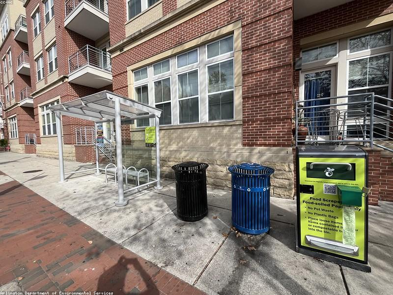
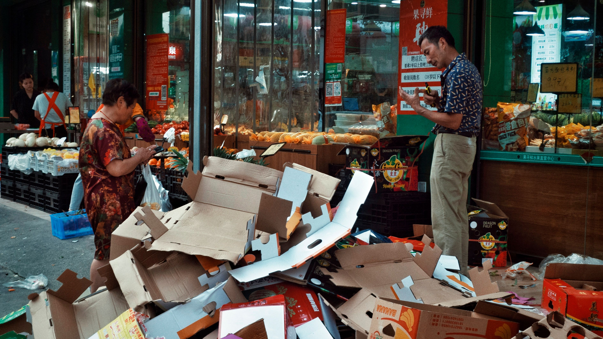
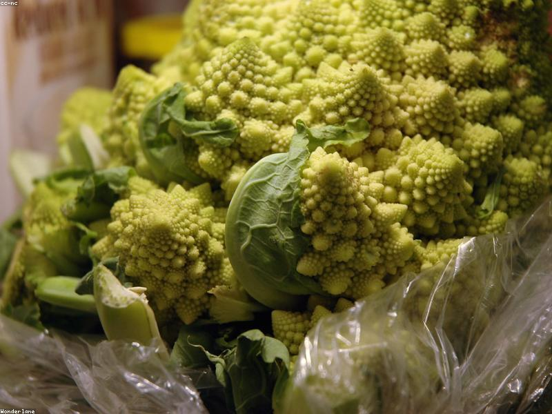
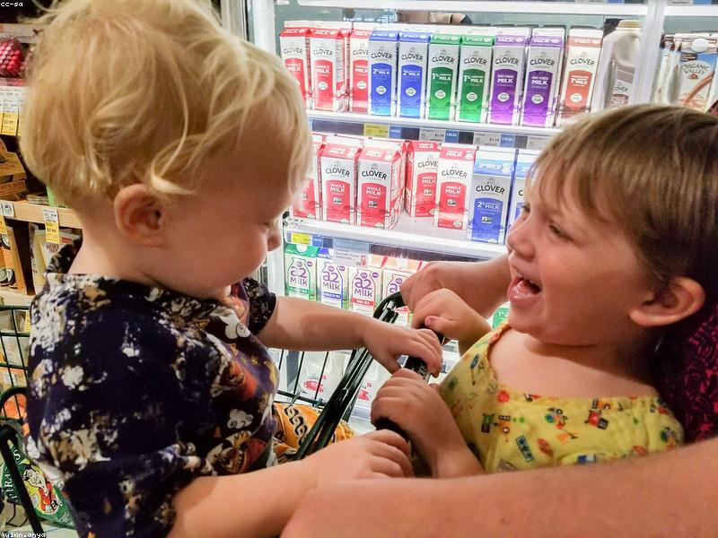
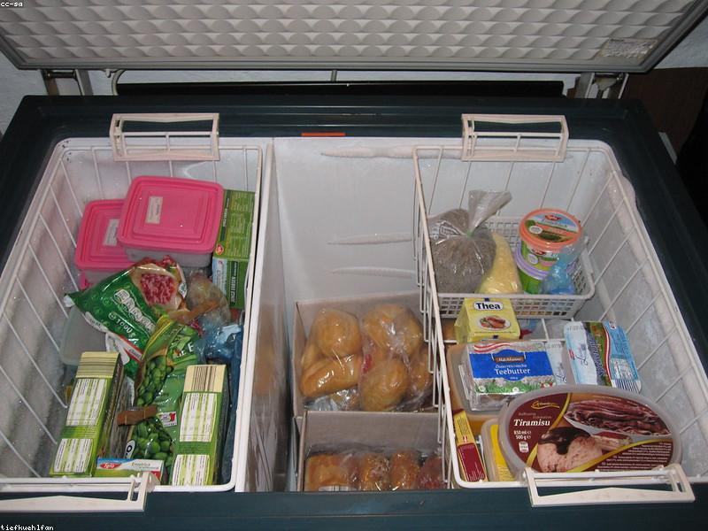
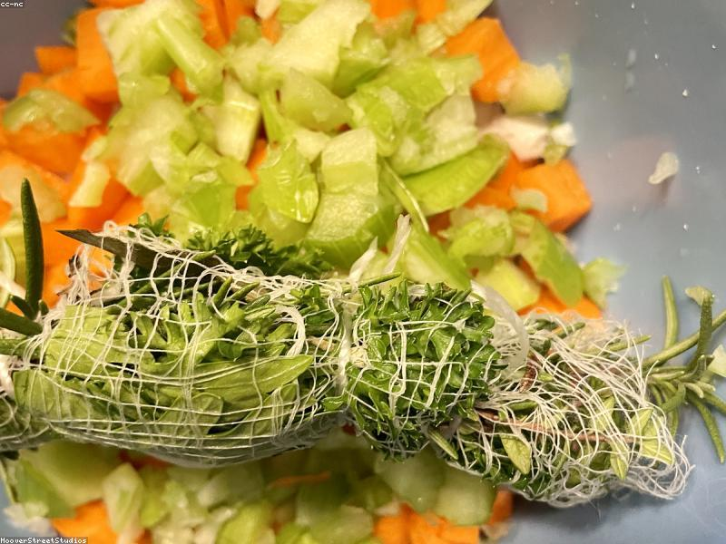
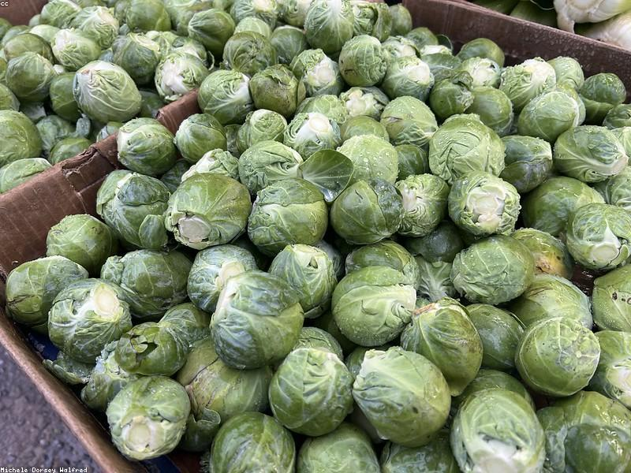

Every year about 1.3 billion tonnes of perfectly good food is thrown away — while millions go hungry. Here's how the waste happens, and why it matters to all of us.
Full Article
Vietnam is one of Asia's biggest food wasters. We break down what households throw away each week — and the simple habits that can cut it in half.
Read MoreAround 282 million people in Africa face hunger. While we bin "imperfect" food, children elsewhere go a whole day on a handful of rice. The link is closer than you think.
Details
From keeping herbs in water to freezing bread, small storage habits dramatically extend shelf life — and stop good food ending up in the bin.
Read More
A huge amount of edible food is binned over confusing date labels. Learn the real difference between "best before" and "use by" — and trust your senses again.
Full Story
Forgetting what's in the fridge is the #1 cause of home food waste. See how our free EatMeFirst tool tells you what to eat first and tracks what you save.
Read More
Fried rice, frittata, soup, smoothies and "clean-out-the-fridge" bowls — five forgiving recipes that turn tired leftovers into a great meal instead of trash.
DetailsIf food waste were a country, it would be the third-largest emitter of greenhouse gases on Earth. Rotting food in landfill releases methane — a powerful climate pollutant.
Read More
A little planning before you shop is the single biggest way to cut waste. Here's a simple weekly system for buying, cooking and finishing everything you bring home.
Details